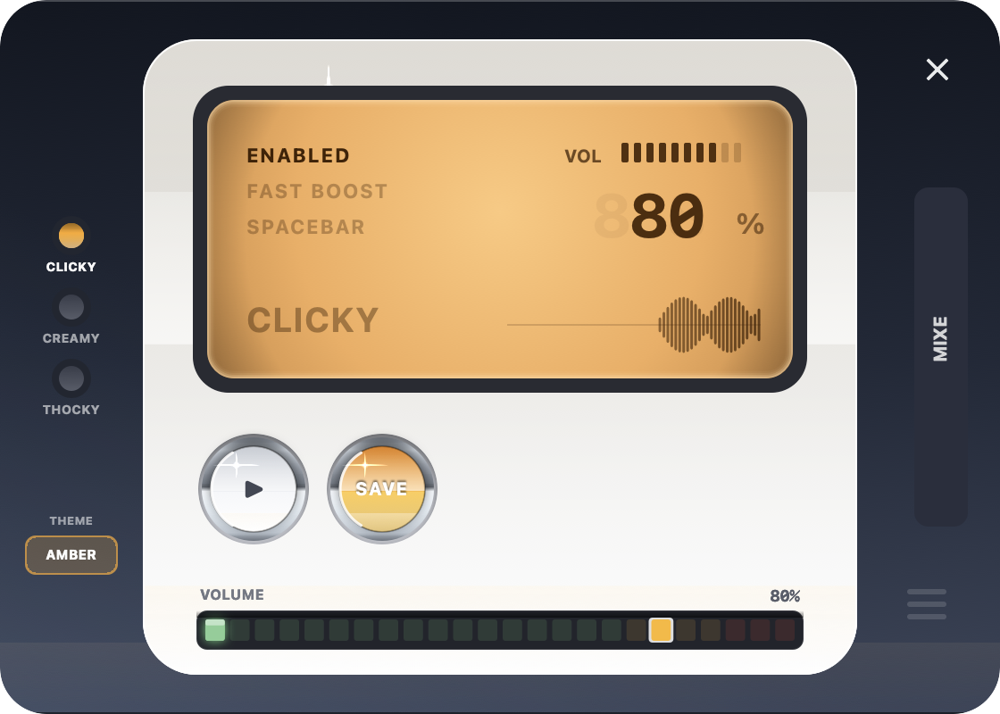
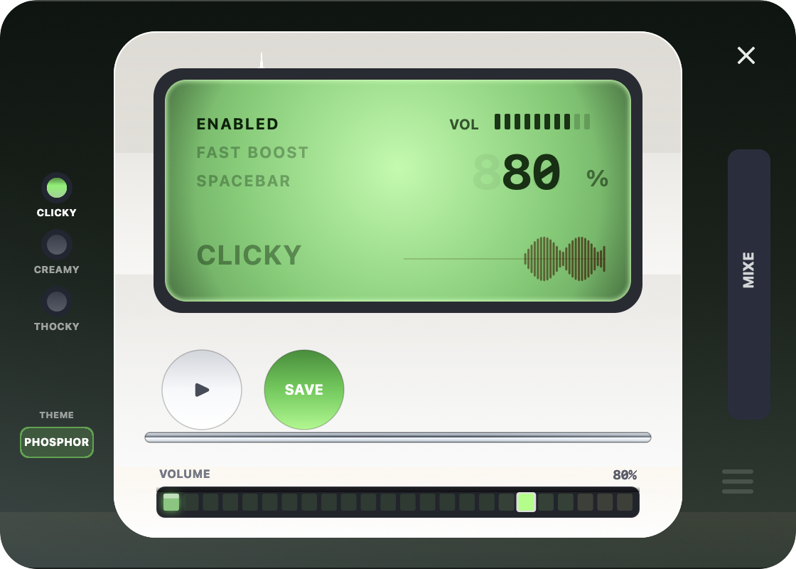
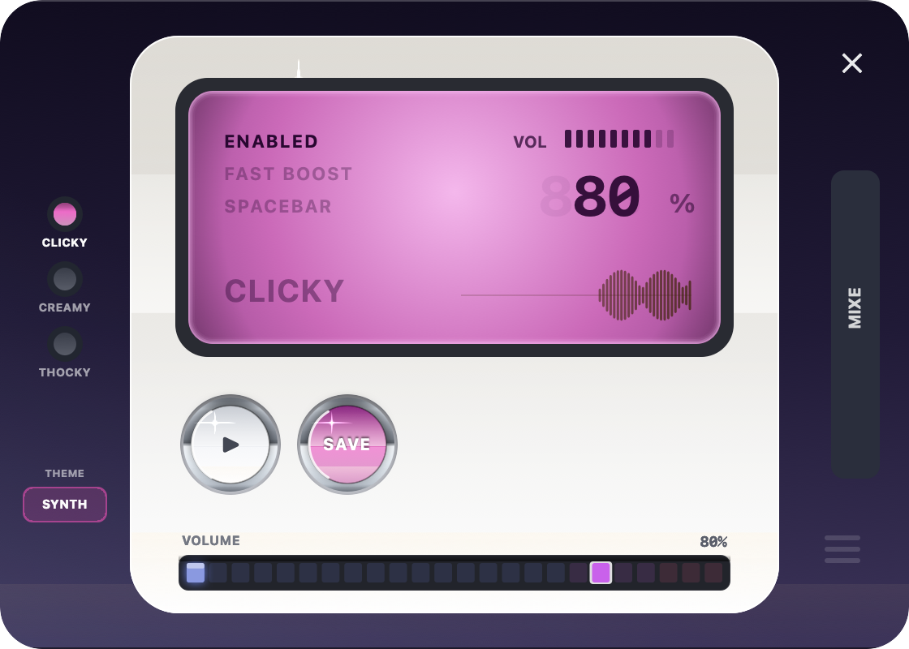

KLACK
Every key, a sound
Free · MIT · macOS 12+ · 1.6 MB · listen-only
The demo
Twenty-three seconds, with sound. Every click is the actual WAV the app plays; the panel is rendered from source by the app's own harness — nothing here is screen-recorded.
The reel — how it was made
An 84-second film about the process: the idea, the research into three kinds of click, the control panel, and the first real keystroke.
Install in three steps
- Open the DMG, drag Klack to Applications.
Nothing else is installed anywhere. Delete the app to uninstall.
- First launch: right-click Klack → Open → Open.
Klack is signed but not notarized, so a plain double-click says "cannot be opened". Right-click → Open is Apple's own route past that; you do it once. If it still refuses:
xattr -dr com.apple.quarantine /Applications/Klack.app - Allow Input Monitoring when asked.
Flip Klack on in System Settings → Privacy & Security → Input Monitoring and start typing. The app notices within three seconds — no relaunch.
Under the keycaps
The parts that took the time, with the numbers that prove them.
dB, measured
The first "softer" filter measured at −0.1 dB — its make-up gain restored the exact transient it removed. A ~100-line band-energy analyzer caught it. The shipped shelf cuts 3–6 kHz by 5.1 dB and leaves the lows at 0.0.
seconds to self-heal
The app never trusts a permission flag. It asks the event tap whether it exists, every 3 s until it does, then stops polling. On macOS 26 the flags and the capability disagree in both directions.
lines of plastic
The hand-drawn keycap surface is the largest file in the project — bigger than the audio engine, 25× the menu code. Non-monotonic chrome ramp, grain under 5%, gloss as a hard terminator.
packs for strangers, once
The first DMG passed every test and was silent for everyone else — the packs lived only on the author's Mac. The build now runs its audio test as a stranger and refuses to ship if they'd hear nothing.
voice pool
Round-robin playback with idle-node selection and a limiter, so a fast burst stacks into a phrase instead of mush. Per-hit gain eases down as typing speeds up.
bytes leave the machine
Listen-only event tap: it cannot modify or block input. Klack never logs, stores or transmits keystrokes. There is no network code in the app.
Four themes




If the toggle is on but it hears nothing
macOS is holding a permission record for an older build and matching the new one against it. Clear it; the dialog comes back within seconds:
tccutil reset ListenEvent com.vinaypathak.klackOther platforms
Windows — untested
A lean .NET tray app under windows/: global hook, same packs, pack switch, volume. Cross-compiled on a Mac and not yet run on Windows. Grab the zip and tell us what you saw.
Android — untested
Phones don't let an app hear other apps' keys, so there Klack is the keyboard: Klack Keyboard, a QWERTY IME that clicks on every key. APK builds; no phone has run it yet.